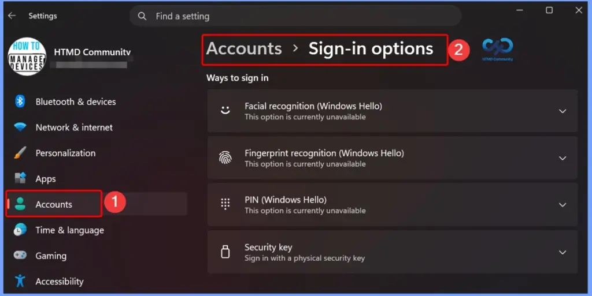
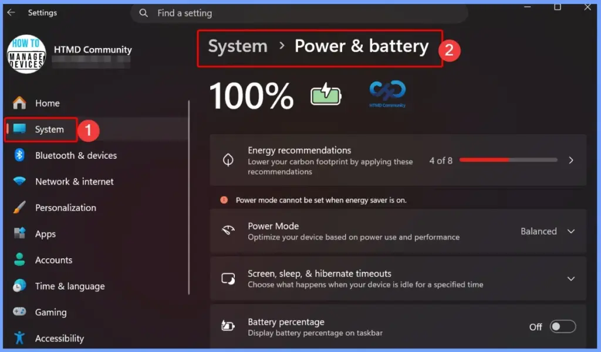
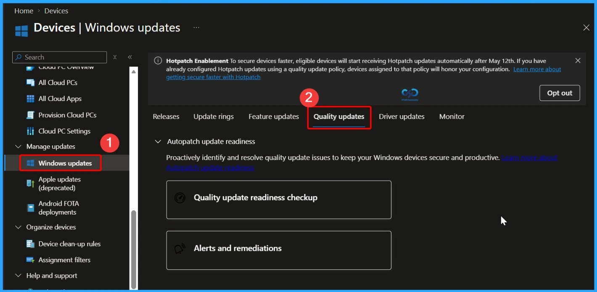
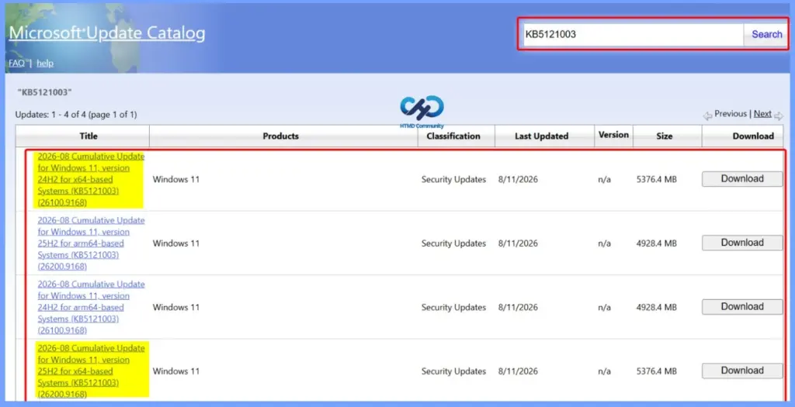

Key Takeaways
- The August 2026 Windows 11 KB5121003 KB5120240 patch fixes security vulnerabilities and bugs to protect Windows devices from threats and improve system stability.
- Improves system performance and ensures devices receive the latest Windows features and enhancements.
- Helps protect Windows devices against security vulnerabilities and potential threats.
- Improved File Explorer Experience: Enhances file size readability, tab navigation, Home page loading, and thumbnail clarity for a smoother and more user-friendly experience.
- 3 Windows vulnerabilities were identified in the August 11, 2026 security update.
- CVE-2026-68820 is the highest priority because exploitation has been detected.
- CVE-2026-62832 has been publicly disclosed and is considered more likely to be exploited.
- CVE-2026-72971 has been publicly disclosed, but exploitation is currently considered unlikely.
2026 August KB5121003 KB5120240 Windows 11 Patch | 3 Zero Day Vulnerabilities and 400 Flaws! As part of the August 2026 Windows 11 Patch, File Explorer receives several usability and performance improvements. File sizes are now displayed in appropriate units such as KB, MB, and GB, making them easier to understand. Users can also middle-click folders to open them in new tabs from the Address Bar and Home page. The update further improves the Home page experience by reducing loading issues and unexpected scrolling, while making Recommended section thumbnails clearer and sharper.
Table of Content
2026 August KB5121003 KB5120240 Windows 11 Patch | 3 Zero Day Vulnerabilities and 400 Flaws
The August 2026 Windows Patch enhances the overall Windows Search experience by making search results more accurate and useful. Users can find installed applications more easily even when they enter partial names or make typing mistakes. The update also improves Settings search, helping users quickly locate the most relevant options at the top of the results.
3 Zero Day Vulnerabilities and 400 Flaws
The August 11, 2026 security updates address three zero day Windows vulnerabilities. CVE-2026-68820, affecting the Windows Ancillary Function Driver for WinSock, has exploitation detected and is considered actively exploited.
CVE-2026-72971, affecting the Windows Container Isolation FS Filter Driver, has been publicly disclosed, but exploitation is currently considered unlikely. CVE-2026-62832, affecting the Windows User Profile Service, has also been publicly disclosed and is assessed as more likely to be exploited. Organizations should prioritize patching these vulnerabilities, especially the actively exploited CVE-2026-68820.
- 12 Denial of Service Vulnerabilities
- 21 Spoofing Vulnerabilities
- 176 Elevation of Privilege Vulnerabilities
- 11 Security Feature Bypass Vulnerabilities
- 110 Remote Code Execution Vulnerabilities
- 86 Information Disclosure Vulnerabilities
| Release Date | CVE Number | CVE Title | Publicly disclosed | Exploitability assessment | Exploited |
|---|---|---|---|---|---|
| Aug 11, 2026 | CVE-2026-68820 | Windows Ancillary Function Driver for WinSock Elevation of Privilege Vulnerability | No | Exploitation Detected | Yes |
| Aug 11, 2026 | CVE-2026-72971 | Windows Container Isolation FS Filter Driver (unionfs.sys) Tampering Vulnerability | Yes | Exploitation Unlikely | No |
| Aug 11, 2026 | CVE-2026-62832 | Windows User Profile Service Elevation of Privilege Vulnerability | Yes | Exploitation More Likely | No |

2026 June KB5121003 KB5120240 Windows 11 Patch
The Windows 11 Patch improves the Windows Update experience by providing a more accurate update progress display in Settings. It also improves the update cleanup process, helping the system perform better immediately after an update is installed.
| Windows 11 26H1 | Windows 11 25H2 and 24H2 | Windows 11 23H2 |
|---|---|---|
| KB5121000 | KB5121003 | KB5120240 |

Updated Version of Windows 11 after Installing KB5094126 KB5093998 June 2026 Patch
The August 2026 Windows Patch adds support for external fingerprint readers with Windows Hello Enhanced Sign-in Security (ESS). This allows supported Windows 11 PCs, including desktops and Copilot+ PCs, to use a secure external fingerprint sensor for sign-in. Users can connect a supported fingerprint reader and set it up under Settings > Accounts > Sign-in options.
- Windows 11 version 25h2 and 24h2 – August 11, 2026—KB5121003 (OS Builds 26200.9168 and 26100.9168)
- More Details on Windows 11 version Numbers: Windows 11 Version Numbers Build Numbers Major Minor Build Rev.
- Windows 11 Version 23h2 – August 11, 2026—KB5120240 (OS Build 22631.7517)
- Windows 11 Version 26h1 – August 11, 2026—KB5121000 (OS Build 28000.2704)

Windows 11 Features and New Improvements – KB5121003 KB5120240
| New Improvement | Details |
|---|---|
| File Size Display – File Explorer Update | File sizes in Details view now use appropriate units such as KB, MB, and GB instead of showing everything in KB. |
| Open Folder in New Tab – File Explorer Update | Middle-click can now open a folder in a new tab from the Address Bar and Home page, providing more consistent tabbed navigation. |
| Improved App Search -Windows Search | Better handles typos and partial app names when searching for installed applications. |
| Improved Settings Search -Windows Search | Improves search relevance by displaying more useful settings higher in the search results. |
| Voice Isolation Voice Access Update | Helps Voice Access recognize your voice more accurately by reducing background noise and interference from other speakers. |
| Voice Isolation Mode | Filters out other speakers and background noise. A one-time voice setup is required. |
| Remove Background Noise Only | Filters non-speech sounds such as typing and door slams without additional setup. |
| No Filtering | Uses the default microphone input without additional processing. |
| Korean Language Support | Adds Korean language support for Voice Access. |
| Improved Reliability | Improves the reliability of starting Voice Access. |
| Taskbar Notification Badges – Widgets UpdateWidgets Update | Notification badges now use your Windows accent color instead of red, reducing unnecessary visual distractions. |
| Lock Screen Widgets | Simplifies the Lock screen Widgets experience. For new users, Weather is now the only widget enabled by default. |
| Scroll and Zoom Speed – Touchpad Update | Allows users to adjust the baseline speed for scrolling and zooming gestures. |
| Accelerated Scrolling – Touchpad Update | Makes scrolling faster when the gesture is repeated, helping users navigate long documents more quickly. |
| View Preferences Start Menu Update | Improves the reliability of Start menu view preferences so your selected view is retained. |
| Keyboard Navigation | Improves keyboard navigation when focus is set to the apps list in the Start menu |
| Voice Typing | Fluid dictation is now off by default for new users. A teaching tip appears when the feature is used for the first time. |
| Input | Improves the persistence of mouse cursor size, helping users retain their selected cursor size. |
| Windowing | Ensures system dialogs open at the appropriate size on small tablets. |
| Accessibility | Improves the Magnifier experience by turning off the horizontal and vertical touch bars by default, preventing them from obstructing magnified content. Users can re-enable them under Settings > Accessibility > Magnifier. |
| Windows Hello | Adds support for peripheral fingerprint sensors, allowing supported external ESS fingerprint readers to be used on desktops and other Windows 11 PCs, including Copilot+ PCs. |
| Fonts – Windows Feature | Restores support for Unicode variation sequences in the Myanmar Text font. |
| Fonts | Improves character shaping and rendering, providing more accurate and consistent text display. |
| Account Control | Refreshes the Start menu account control design and adds a badge showing your subscription status. Available for users signed in with a Microsoft account. |
| Taskbar | Improves the reliability of loading the system tray when using the taskbar on touch devices in tablet posture. |
| AI Component | Allows users to remove the Image Generation AI component from supported Copilot+ PCs where it is installed. |
| Windows Setup | Adds a parental controls notice during Windows setup, highlighting available family safety features. |
| Power and Battery | Improves the reliability of power settings by applying changes across all power plans, including display, sleep, hibernate, power button, sleep button, and lid-close settings. |
| Power and Battery | Restores the option to set a threshold for when Energy Saver should turn on under Settings > System > Power & Battery. |
| Windows Update | Improves the calculation of update progress displayed in Windows Update Settings. |
| Windows Update | Updates the update cleanup process to improve system performance immediately after an update. |
| Sounds | Improves system sounds in Dark Mode for a more consistent experience. |
| Date and Time | Improves detection for time zone change notifications. Improves DST data accuracy for Beirut, Casablanca, Jerusalem, and Nuuk time zones. |
| Network | Improves the reliability of DHCP renewals, especially when receiving NACKs from the DHCP server and on devices using Modern Standby. |
| Improves printing performance (pages per minute) for IPPS (Internet Printing Protocol Secure) printers. | |
| Clipboard | Improves clipboard reliability in certain Remote Desktop and Azure Virtual Desktop (AVD) scenarios. |
| General Reliability | Improves the reliability of Windows sign-in and lock screens, particularly when system memory is low. Improves Start menu and taskbar reliability during startup. Improves explorer.exe reliability, including Jump Lists, recent files, file and folder sharing, Task View, and multiple desktops. |
The August 2026 Windows Patch improves power management by ensuring changes made to display, sleep, hibernate, power button, and lid settings are applied consistently across all power plans. It also restores the option to set a threshold for when Energy Saver should turn on, giving users better control over power usage.
- Settings > System > Power & Battery

Fixed Issues KB5121003 KB5120240
The August 2026 Windows Patch improves the File Explorer Home page by fixing the grey flash that can appear while loading and preventing the page from unexpectedly scrolling back to the top in certain situations.
| Fixed Issues | Details |
|---|---|
| Home Page Loading – File Explorer | Fixes the grey flash during loading and unexpected scrolling to the top on the Home page in certain situations. |
| Recommended Section Thumbnails – File Explorer | Improves the appearance of file thumbnails in the Recommended section, making them clearer and easier to read. |
Intune Windows 11 KB5121003 KB5120240 Deployment
You can deploy the August 2026 Windows 11 Quality Updates through Microsoft Intune. Sign in to the Intune admin center and navigate to Devices > Windows > Windows Updates > Quality Updates. From there, create a new update profile to manage and deploy the latest Windows 11 security fixes and improvements to your organization’s managed devices.
Read More – Software Update Patching Options with Intune Setup Guide
More Details on Zero Day Out Of Band Patch Deployment Using Intune MEM Expedite Best Option and Intune Reporting Issue: Expedite Windows Security Patch Deployment.

SCCM Windows 11 KB5121003 KB5120240 Deployment
You can deploy the August 2026 Windows 11 cumulative updates using SCCM, WSUS, or Microsoft Intune. In SCCM, synchronize the software updates, find the required august 2026 cumulative update using its KB number, and deploy it to the required device collections.
- Deployment Steps
- Open SCCM Console.
- Go to Software Library > Software Updates > All Software Updates.
- Select Synchronize Software Updates.
- Search for the June 2026 cumulative update using the KB number.
- Select the update and deploy it to the required device collections.
- Monitor the deployment to check the installation status and progress.
Direct Download Links of Windows 11 KB5121003 KB5120240
You can manually download the August 2026 Windows 11 cumulative update from the Microsoft Update Catalog. Search for the required KB number, choose the update that matches your device, such as x64 or ARM64, download it, and install it manually.
Direct Download Links – Microsoft Update Catalog
| Cumulative Update for Windows 11 | Products | Size | Direct Download |
|---|---|---|---|
| 2026-01 Cumulative Update for Windows 11, version 25H2 for x64-based Systems(KB5121003) | Windows 11 25H2 | 5376.4 MB | Download |
| 2026-01 Cumulative Update for Windows 11 Version 24H2 for x64-based Systems (KB5121003) | Windows 11 24H2 | 5376.4 MB | Download |
| 2026-01 Cumulative Update for Windows 11 Version 23H2 for x64-based Systems (KB5120240) | Windows 11 23H2 | 1050.5 MB | Download |

Resources
August 11, 2026—KB5121003 (OS Builds 26200.9168 and 26100.9168) | Microsoft Support
Need Further Assistance or Have Technical Questions?
Join the LinkedIn Page and Telegram group to get the latest step-by-step guides and news updates. Join our Meetup Page to participate in User group meetings. Also, join the WhatsApp Community and the Whatsapp channel to get the latest news on Microsoft Technologies. We are there on Reddit as well.
Author
Anoop C Nair is Workplace Technology solution architect with 25+ years of experience in global enterprise organizations such as JP Morgan, Capgemini, etc. He is Microsoft Certified Trainer. Microsoft MVP from 2015 onwards for consecutive 11 years! He also conducts Intune and modern workplace tech training for enterprise organizations. He is Blogger, Speaker, and Founder of HTMD Community and HTMD Conference. His focus is on Device Management technologies such as Intune, Windows, Cloud PC. He writes about technologies like Intune, SCCM, Windows, Cloud PC, Windows, Entra, Microsoft Security.